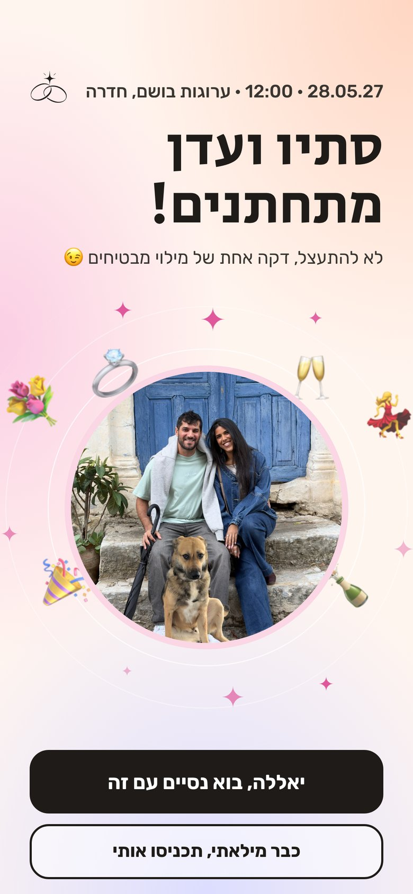
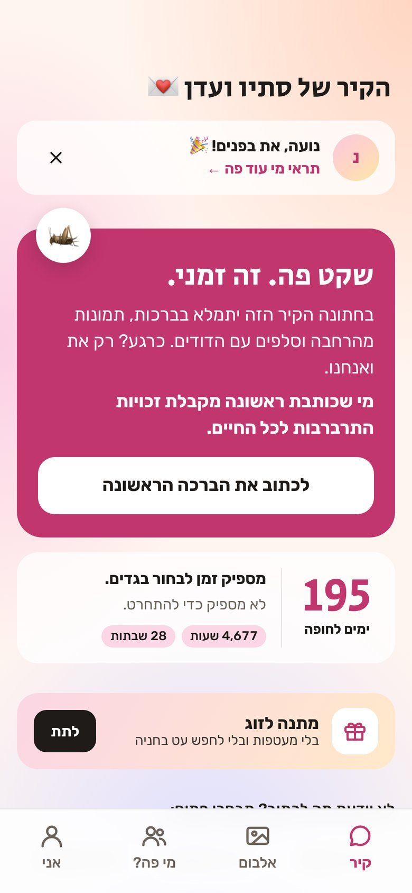

Turning the wedding RSVP into the start of the party
Getting is a wedding app for meeting new people, managing guests and shuttles, and collecting blessings and photos, all in one playful place. I designed it first for our own wedding, Stav & Eden, May 2027.
RoleProduct Designer
PlatformMobile web · Hebrew RTL
ScopeConcept, flows, UI, copy
StatusIn use for our wedding
נו, באים או מה? 👀
No app to download

